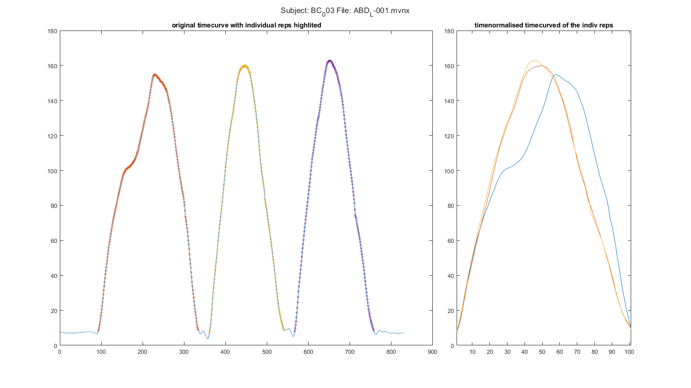
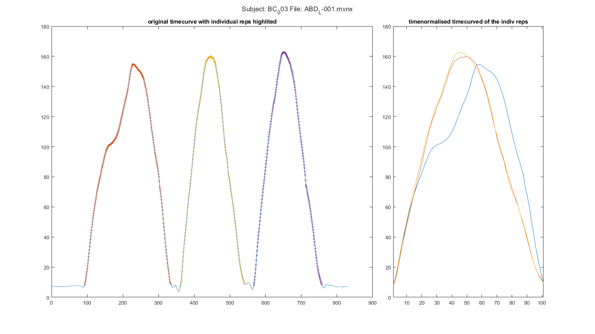
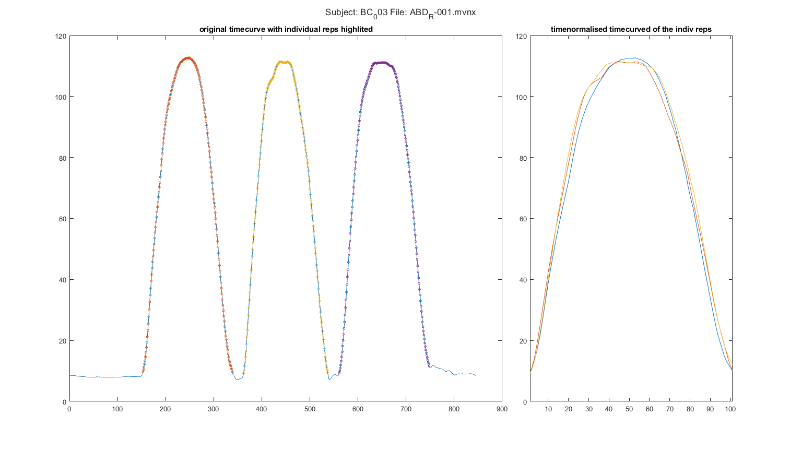
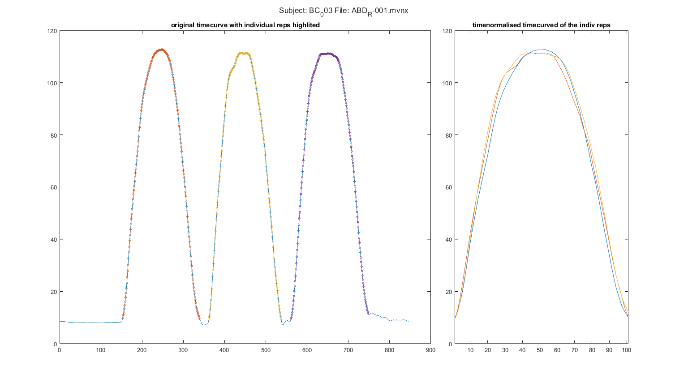

Contents
Extract the range of motion data and write to excel.
This code extracts the range of motion timecurve as calculated by the xsens system. Data collected with Xsens MVN 2021.2. Nescesary functions: 1) MVN.m 2) load_mvnx.m code written by dr. Jill Emmerzaal KU Leuven, Tervuursevest 101, box 1501 Research Group for Rehabilitation in Internal Disorders
clearvars; close all; clc
1. input data
cd("C:\Users\u0117545\Documents\GitHub\ULIFT_BC") addpath("C:\Users\u0117545\OneDrive - KU Leuven\2.Dataprocessing\Matlab\addons") Timepoint = 'T0'; movement = {'ABD'};%, 'AF', 'EXO'}; %Abductie'; %Abductie Anteflexie Exorotatie path.root = 'C:\Users\u0117545\KU Leuven\An De Groef - DATA'; %path.out = fullfile(path.root,'Output','Database_ROM.mat'); plot_or_not = 1; affected_table = readtable(fullfile(path.root, "Aangedane zijde.xlsx"));
2. load data
for subj = 2%(2:10)%20:27 if subj < 10 subj_name = ['BC_00' num2str(subj)]; elseif subj < 100 subj_name = ['BC_0' num2str(subj)]; else subj_name = ['BC_', num2str(subj)]; end fprintf('\n') cprintf('*text', 'Processing: %s at Timepoint: %s....... \n', subj_name, Timepoint) path.subj = fullfile(path.root, subj_name, 'Xsens', Timepoint, 'Reproces'); check_subj = exist(path.subj); if check_subj == 7 cd(path.subj) fprintf('\t current directory changed: %s \n', path.subj) %initialize counters counterR = 0; counterR_SSS = 0; counterL = 0; counterL_SSS = 0; counterRUN = 0; content = dir(path.subj); nfiles = size(content,1); % find the affected side idx = find(strcmp(affected_table.ppID, subj_name)); involved = affected_table(idx,:).involved; d = strfind(subj_name,'_'); rownr = str2double(subj_name(d+1:end)); % Start loop through files per subject for file = 1:nfiles if contains(content(file).name, movement) && contains(content(file).name, '.mvnx')
file_ik = content(file).name;
[~,name, ~] = fileparts(content(file).name);
[fileName] = regexprep(name, '-', '_');
d = strfind(name,'_');
arm = content(file).name(d+1);
fprintf('\t Analysing: %s \n', fileName)
fprintf('\t\t Arm of interest: %s \n', arm)
if strcmp(arm, involved)
fprintf('\t\t this is the affected side \n')
else
fprintf('\t\t this is the unaffected side \n')
end
Analysing: ABD_L_001 Arm of interest: L this is the affected side
Analysing: ABD_R_001 Arm of interest: R this is the unaffected side
2.1 Load xsens data
Change the filename here to the name of the file you would like to import
fprintf('\t \t %s: read xsens file \n', content(file).name) [sensorData, segmentData, jointData, tree]= MVN(file_ik); if isfield(tree, 'fileComments') fprintf('\t \t \t Comment in file: %s \n', tree.fileComments) end if contains(arm, 'L') jointno = 12; else jointno = 8; end if strcmp(movement, 'ABD') col = 1; convention = 'jointAngleXZY'; elseif strcmp(movement, 'AF') col = []; convention = 'jointAngle'; elseif strcmp(movement, 'EXO') col = []; convention = 'jointAngle'; end [peakLoc, peakMag] = peakfinder(jointData(jointno).(convention)(:,col), [],-5,-1,false); if isempty(peakMag)
We find the peak magnitude, and based on that mannitude we scale sine signal to match the height of the ROM repetition After that, we match the sine signal with the full ROM signal and match the individual repetitions.
[peakLoc, peakMag] = peakfinder(jointData(jointno).(convention)(:,col), [],[],1,false);
iStart = zeros(size(peakMag));
iStop = zeros(size(peakMag));
norm_data = zeros(size(peakMag,1),101);
figure;
plot(jointData(jointno).(convention)(:,col))
hold on;
temp = jointData(jointno).(convention)(:,col);
for idx = 1:size(peakMag,1)
t=0:0.01:1;
f=1;
x = sin(pi*f*t) * peakMag(idx);
[iStart(idx,1), iStop(idx,1)] = findsignal(temp, x,'TimeAlignment','dtw','Metric','absolute');
plot(iStart(idx):iStop(idx), jointData(jointno).(convention)(iStart(idx):iStop(idx),col), 'LineWidth', 1.5)
temp(iStart(idx,1):iStop(idx,1)) = 0;
 
  
 

normalise the data to 100 data points
norm_data(idx, :) = normalisation(jointData(jointno).(convention)(iStart(idx):iStop(idx),col), []);
end clear temp
Prep data for export to excel.
norm_mean = mean(norm_data);
if strcmp(arm, involved)
BC.aff.(Timepoint)(rownr,:) = norm_mean;
else
BC.unaff.(Timepoint)(rownr,:) = norm_mean;
end
else fprintf('\t \t %s: There are lange minima \n', content(file).name) fprintf('\t \t check the data') end% extra check in the data. If there are large minima in the data, don't perform the script
ABD_L-001.mvnx: read xsens file
ABD_R-001.mvnx: read xsens file
end % if contains movement name and .mvnx end% loop through files end% subject exists end% end loop through subjects
<strong>Processing: BC_002 at Timepoint: T0....... </strong> current directory changed: C:\Users\u0117545\KU Leuven\An De Groef - DATA\BC_002\Xsens\T0\Reproces